5. Versie 1: Spring-architectuur / JPA
We willen een console-applicatie en een grafische applicatie schrijven waarmee de loonstrook kan worden opgesteld voor de kinderopvangmedewerkers die in dienst zijn bij het „Maison de la petite enfance” van een gemeente. Deze applicatie zal de volgende architectuur hebben:
 |
5.1. BD De database
De statische gegevens die nodig zijn voor het opstellen van de loonstrook worden opgeslagen in een database die we hierna dbpam zullen noemen. Deze database zou de volgende tabellen kunnen bevatten:
Structuur:
primaire sleutel | |
versienummer – loopt op bij elke wijziging van de rij | |
sofinummer van de werknemer – uniek | |
naam van de werknemer | |
zijn voornaam | |
zijn adres | |
zijn woonplaats | |
zijn postcode | |
vreemde sleutel in het veld [ID] van de tabel [INDEMNITES] |
De inhoud zou als volgt kunnen zijn:

Structuur:
primaire sleutel | |
versienummer – loopt op bij elke wijziging van de regel | |
percentage: algemene sociale bijdrage + bijdrage aan de aflossing van de sociale schuld | |
percentage: aftrekbare algemene sociale bijdrage | |
percentage: sociale zekerheid, weduwschap, ouderdom | |
percentage: aanvullend pensioen + werkloosheidsverzekering |
De inhoud zou als volgt kunnen zijn:

De sociale premiepercentages zijn onafhankelijk van de werknemer. De bovenstaande tabel bevat slechts één rij.
primaire sleutel | ||
versienummer – loopt op bij elke wijziging van de regel | ||
verwerkingsindex – uniek | ||
nettoprijs in euro's voor een uur wachtdienst | ||
vergoeding voor levensonderhoud in euro per dag dienst | ||
maaltijdvergoeding in euro per dag dienst | ||
vergoeding voor betaald verlof. Dit is een percentage dat op het basisloon moet worden toegepast. | ||
De inhoud zou als volgt kunnen zijn:
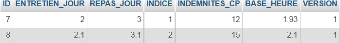
Er zij opgemerkt dat de vergoedingen van kinderoppas tot kinderoppas kunnen verschillen. Ze zijn namelijk gekoppeld aan een specifieke kinderoppas via diens salarisindex. Zo heeft mevrouw Marie Jouveinal, die een salarisindex van 2 heeft (tabel EMPLOYES), een uurloon van 2,1 euro (tabel INDEMNITES).
5.2. Berekeningswijze van het loon van een kinderoppas
Hieronder wordt de berekeningswijze van het maandsalaris van een kinderoppas weergegeven. Dit is niet de berekeningswijze die in de praktijk wordt gebruikt. Als voorbeeld nemen we het salaris van mevrouw Marie Jouveinal, die in de te betalen maand 150 uur over 20 dagen heeft gewerkt.
Er wordt rekening gehouden met de volgende elementen: | | |
Het basissalaris van de kinderoppas wordt berekend aan de hand van de volgende formule: | ||
Een aantal sociale premies moeten worden ingehouden op dit : | | |
Totaal aan sociale premies: | ||
Bovendien heeft de kinderopvangmedewerkster voor elke gewerkte dag recht op een verblijfsvergoeding en een maaltijdvergoeding. Hiervoor ontvangt zij de volgende vergoedingen: | | |
Uiteindelijk bedraagt het aan de kinderopvangmedewerkster uit te betalen nettoloon: |
5.3. Werking van de console-applicatie
Hier volgt een voorbeeld van de uitvoering van de console-applicatie in een DOS-venster:
We gaan een programma schrijven dat de volgende gegevens ontvangt:
- het socialezekerheidsnummer van de kinderoppas (254104940426058 in het voorbeeld – regel 1)
- totaal aantal gewerkte uren (150 in het voorbeeld – regel 1)
- totaal aantal gewerkte dagen (in het voorbeeld 20 – regel 1)
We zien dat:
- regels 9-14: de gegevens weergeven van de werknemer waarvan het socialezekerheidsnummer is opgegeven
- regels 17-20: geven de tarieven van de verschillende premies weer
- regels 23-26: tonen de toeslagen die horen bij de salarisindex van de werknemer (hier index 2)
- regels 29-33: geven de samenstellende delen van het te betalen loon weer
De applicatie meldt eventuele fouten:
Oproep zonder parameters:
dos>java -jar pam-spring-ui-metier-dao-jpa-eclipselink.jar
Syntaxe : pg num_securite_sociale nb_heures_travaillées nb_jours_travaillés
Oproep met onjuiste gegevens:
dos>java -jar pam-spring-ui-metier-dao-jpa-eclipselink.jar 254104940426058 150x 20x
Le nombre d'heures travaillées [150x] est erroné
Le nombre de jours travaillés [20x] est erroné
Oproep met een onjuist sofinummer:
dos>java -jar pam-spring-ui-metier-dao-jpa-eclipselink.jar xx 150 20
L'erreur suivante s'est produite : L'employé de n°[xx] est introuvable
5.4. Werking van de grafische applicatie
Met de grafische applicatie kunnen de salarissen van kinderopvangmedewerkers worden berekend via een Swing-formulier:
 |
- De gegevens die als parameters aan het consoleprogramma werden doorgegeven, worden nu ingevoerd via de invoervelden [1, 2, 3].
- De knop [4] start de salarisberekening
- Het formulier toont de verschillende looncomponenten tot en met het uit te betalen nettoloon [5]
De vervolgkeuzelijst [1, 6] toont niet de nummers SS van de werknemers, maar hun voor- en achternamen. Hierbij wordt ervan uitgegaan dat er geen twee werknemers zijn met dezelfde voor- en achternaam.
5.5. Aanmaken van de database
We starten WampServer en gebruiken de tool PhpMyAdmin [1]:
 |
- in [2] kiezen we de optie [Bases de données],
 |
- in [3], we maken een database aan [dbpam_hibernate],
- in [4] is de database aangemaakt. We selecteren deze,
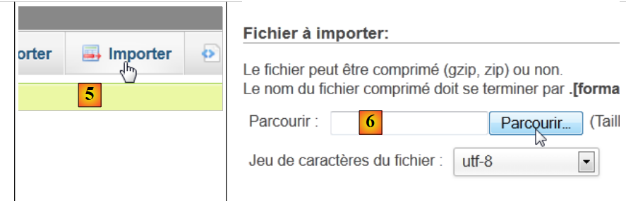 |
- in [5], willen we een script importeren SQL,
- in [6], gebruik je de knop [Parcourir] om het bestand te selecteren,
 |
- in [7,8] selecteren we het script SQL,
- in [9] voer je het uit,
 |
- in [10], de tabellen zijn aangemaakt. Hun inhoud is als volgt:
tabel EMPLOYES

tabel INDEMNITES

tabel COTISATIONS

5.6. Implementatie JPA
5.6.1. Laag JPA / Hibernate
We gaan de laag JPA in de volgende omgeving configureren:
 |
Een consoleprogramma zal met de database werken. Hiervoor is het volgende nodig:
- een database hebben,
- de driver JDBC van de SGBD, in dit geval MySQL,
- de laag JPA met Hibernate implementeren,
- het consoleprogramma schrijven.
We maken het Maven-project [mv-pam-jpa-hibernate] [1] aan:
 |
In de architectuur van onze applicatie hebben we de volgende elementen nodig:
- de database,
- de driver JDBC van SGBD MySQL,
- de JPA / Hibernate-laag (entiteiten en configuratie),
- het testprogramma voor de console.
5.6.1.1. De database
Laten we eerst de lege database aanmaken. We starten WampServer en gebruiken de tool PhpMyAdmin [1]:
 |
- in [2] kiezen we de optie [Bases de données],
 |
- in [3], wordt een database aangemaakt [dbpam_hibernate],
- in [4] is de database aangemaakt.
5.6.1.2. Configuratie van de laag JPA
De koppeling tussen de laag JDBC en de database vindt plaats in het bestand [persistence.xml], dat de laag JPA configureert. Dit bestand kan met NetBeans worden aangemaakt:
 |
- in het tabblad [services] [1] maakt men verbinding met de database via de driver JDBC van MySQL [2],
- in [3] de naam van de database waarmee men verbinding wil maken.
- in [4], de URL JDBC van de database,
- in [5], logt men in als root zonder wachtwoord,
- in [6] kan de verbinding worden getest,
- in [7] is de verbinding tot stand gebracht.
 |
- de verbinding verschijnt in [8] en in [9],
- in [10] wordt een nieuw element aan het project toegevoegd,
 |
- in [11] kiest men de categorie [Persistence] en in [12] het element [Persistence Unit],
- in [13] geven we deze persistentie-eenheid een naam,
- in [14] kiezen we een Hibernate-implementatie,
- in [15] geven we de zojuist aangemaakte verbinding met de database MySQL aan,
- in [16] geven we aan dat bij het instantiëren van de laag JPA deze de tabellen moet aanmaken (create) die overeenkomen met de entiteiten JPA van het project.
Aan het einde van de wizard wordt het bestand [persistence.xml] gegenereerd:
 |
- het bestand verschijnt in een nieuwe tak van het project, in een map [META-INF] [1],
- dat overeenkomt met de map [src/main/resources] van het project [2,3].
De inhoud is als volgt:
<?xml version="1.0" encoding="UTF-8"?>
<persistence version="2.0" xmlns="http://java.sun.com/xml/ns/persistence" xmlns:xsi="http://www.w3.org/2001/XMLSchema-instance" xsi:schemaLocation="http://java.sun.com/xml/ns/persistence http://java.sun.com/xml/ns/persistence/persistence_2_0.xsd">
<persistence-unit name="mv-pam-jpa-hibernatePU" transaction-type="RESOURCE_LOCAL">
<provider>org.hibernate.ejb.HibernatePersistence</provider>
<properties>
<property name="javax.persistence.jdbc.url" value="jdbc:mysql://localhost:3306/dbpam_hibernate"/>
<property name="javax.persistence.jdbc.password" value=""/>
<property name="javax.persistence.jdbc.driver" value="com.mysql.jdbc.Driver"/>
<property name="javax.persistence.jdbc.user" value="root"/>
<property name="hibernate.cache.provider_class" value="org.hibernate.cache.NoCacheProvider"/>
<property name="hibernate.hbm2ddl.auto" value="create-drop"/>
</properties>
</persistence-unit>
</persistence>
- regel 3: de naam van de persistentie-eenheid en het transactietype. RESOURCE_LOCAL geeft aan dat het project de transacties zelf beheert. Dit is hier het consoleprogramma dat dit moet doen,
- regel 4: de gebruikte implementatie JPA is Hibernate,
- regels 6-9: de kenmerken JDBC van de verbinding met de database,
- regel 11: vraagt om het aanmaken van de tabellen die overeenkomen met de entiteiten JPA. In feite genereert NetBeans hier een foutieve configuratie. De configuratie moet als volgt zijn:
<property name="hibernate.hbm2ddl.auto" value="create"/>
Met de optie **create** verwijdert Hibernate bij het instantiëren van de laag JPA de tabellen die bij de entiteiten JPA horen en maakt deze vervolgens aan. De optie **create-drop** doet hetzelfde, maar verwijdert aan het einde van de levensduur van de laag JPA alle tabellen. Er is nog een andere optie:
<property name="hibernate.hbm2ddl.auto" value="update"/>
Deze optie maakt de tabellen aan als ze nog niet bestaan, maar verwijdert ze niet als ze al bestaan.
We voegen nog drie eigenschappen toe aan de Hibernate-configuratie:
<property name="hibernate.show_sql" value="true"/>
<property name="hibernate.format_sql" value="true"/>
<property name="use_sql_comments" value="true"/>
Deze eigenschappen vragen Hibernate om de SQL-opdrachten weer te geven die het naar de database verstuurt. Het volledige bestand ziet er dus als volgt uit:
<?xml version="1.0" encoding="UTF-8"?>
<persistence version="2.0" xmlns="http://java.sun.com/xml/ns/persistence" xmlns:xsi="http://www.w3.org/2001/XMLSchema-instance" xsi:schemaLocation="http://java.sun.com/xml/ns/persistence http://java.sun.com/xml/ns/persistence/persistence_2_0.xsd">
<persistence-unit name="mv-pam-jpa-hibernatePU" transaction-type="RESOURCE_LOCAL">
<provider>org.hibernate.ejb.HibernatePersistence</provider>
<class>jpa.Cotisation</class>
<class>jpa.Employe</class>
<class>jpa.Indemnite</class>
<properties>
<property name="javax.persistence.jdbc.url" value="jdbc:mysql://localhost:3306/dbpam_hibernate"/>
<property name="javax.persistence.jdbc.password" value=""/>
<property name="javax.persistence.jdbc.driver" value="com.mysql.jdbc.Driver"/>
<property name="javax.persistence.jdbc.user" value="root"/>
<property name="hibernate.cache.provider_class" value="org.hibernate.cache.NoCacheProvider"/>
<property name="hibernate.hbm2ddl.auto" value="create"/>
<property name="hibernate.show_sql" value="true"/>
<property name="hibernate.format_sql" value="true"/>
<property name="use_sql_comments" value="true"/>
</properties>
</persistence-unit>
</persistence>
5.6.1.3. De afhankelijkheden
Laten we terugkeren naar de architectuur van het project:
 |
We hebben de laag JPA geconfigureerd via het bestand [persistence.xml]. De gekozen implementatie was Hibernate. Dit heeft geleid tot afhankelijkheden in het project:
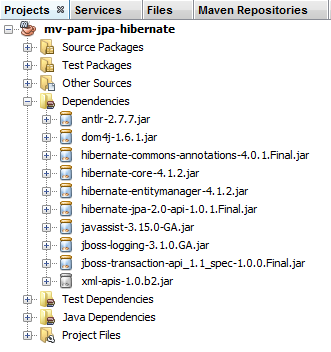 |
Deze afhankelijkheden zijn het gevolg van de opname van Hibernate in het project. We moeten nog een afhankelijkheid toevoegen, namelijk die van de driver JDBC van MySQL, die de laag JDBC van de architectuur implementeert. We passen het bestand [pom.xml] als volgt aan:
<dependencies>
<dependency>
<groupId>junit</groupId>
<artifactId>junit</artifactId>
<version>3.8.1</version>
<scope>test</scope>
</dependency>
<dependency>
<groupId>mysql</groupId>
<artifactId>mysql-connector-java</artifactId>
<version>5.1.6</version>
</dependency>
<dependency>
<groupId>org.hibernate</groupId>
<artifactId>hibernate-entitymanager</artifactId>
<version>4.1.2</version>
</dependency>
...
<dependency>
<groupId>org.hibernate.common</groupId>
<artifactId>hibernate-commons-annotations</artifactId>
<version>4.0.1.Final</version>
</dependency>
</dependencies>
De regels 8-12 voegen de afhankelijkheid van de driver JDBC van MySQL toe.
5.6.1.4. De entiteiten JPA
 |
Vraag: Genereer, volgens de werkwijze uit het voorbeeld in paragraaf 4.4, de entiteiten [Cotisation, Indemnite, Employe].
Opmerkingen:
- de entiteiten maken deel uit van een pakket met de naam [jpa],
- elke entiteit krijgt een versienummer,
- als twee entiteiten door een relatie met elkaar verbonden zijn, wordt alleen de hoofdrelatie @ManyToOne aangemaakt. De omgekeerde relatie @OneToMany wordt niet aangemaakt.
5.6.1.5. De code van de hoofdklasse
We nemen de eerder ontwikkelde entiteiten JPA en [1] op in het project:
 |
en voegen vervolgens [2] toe, de volgende klasse [main.Main]:
package main;
import javax.persistence.EntityManager;
import javax.persistence.EntityManagerFactory;
import javax.persistence.Persistence;
public class Main {
public static void main(String[] args) {
// het aanmaken van de Entity Manager volstaat om de laag op te bouwen JPA
EntityManagerFactory emf = Persistence.createEntityManagerFactory("mv-pam-jpa-hibernatePU");
EntityManager em=emf.createEntityManager();
// bronnen vrijgeven
em.close();
emf.close();
}
}
- regel 10: we maken de EntityManagerFactory aan van de persistentie-eenheid met de naam [mv-pam-jpa-hibernatePU]. Deze naam is afkomstig uit het bestand [persistence.xml]:
<persistence-unit name="mv-pam-jpa-hibernatePU" transaction-type="RESOURCE_LOCAL">
...
</persistence-unit>
- regel 12: we maken het bestand EntityManager aan. Hierdoor wordt de laag JPA aangemaakt. Het bestand [persistence.xml] wordt verwerkt en dus worden de tabellen in de database aangemaakt,
- regels 14-15: de bronnen worden vrijgegeven.
5.6.1.6. Tests
Laten we teruggaan naar de architectuur van ons project:
 |
Alle lagen zijn geïmplementeerd. We voeren het project [2] uit.
 |
De console-uitvoer is als volgt:
1 2 3 4 5 6 7 8 9 10 11 12 13 14 15 16 17 18 19 20 21 22 23 24 25 26 27 28 29 30 31 32 33 34 35 36 37 38 39 40 41 42 43 44 45 46 47 48 49 50 51 52 53 54 55 56 57 58 59 60 61 62 63 64 65 66 67 68 69 70 71 72 73 74 75 76 77 78 79 80 81 82 83 84 85 86 87 88 89 90 91 92 93 94 95 96 97 98 99 100 101 102 103 104 105 | |
In de console zijn uitsluitend Hibernate-logs te vinden, aangezien het uitgevoerde programma niets anders doet dan de laag JPA instantiëren. Let op de volgende punten:
- regel 43: Hibernate probeert de vreemde sleutel uit de tabel [EMPLOYES] te verwijderen,
- regels 51-55: verwijdering van de drie tabellen,
- regel 57: aanmaken van de tabel [COTISATIONS],
- regel 67: aanmaken van de tabel [EMPLOYES],
- regel 80: aanmaken van de tabel [INDEMNITES],
- regel 91: aanmaken van de vreemde sleutel van de tabel [EMPLOYES].
In NetBeans zijn de tabellen zichtbaar in de eerder aangemaakte verbinding:
 |
De aangemaakte tabellen zijn afhankelijk van zowel de implementatie van de gebruikte laag JPA als van de gebruikte SGBD. Zo kan een implementatie van JPA / EclipseLink met dezelfde database verschillende tabellen genereren. Dat gaan we nu bekijken.
5.6.2. Laag JPA / EclipseLink
We gaan een nieuw Maven-project opzetten in de volgende omgeving:
 |
We volgen de stappen uit de vorige paragraaf:
- een database MySQL [dbpam_eclipselink] aanmaken. We gebruiken het script [dbpam_eclipselink.sql] om deze te genereren,
- maak het projectbestand [persistence.xml] aan. Neem de implementatie JPA 2.0 EclipseLink,
- voeg in de gegenereerde afhankelijkheden de afhankelijkheid van de driver JDBC van MySQL toe,
- voeg de entiteiten JPA en het consoleprogramma toe,
- voer de tests uit.
Het bestand [persistence.xml] ziet er als volgt uit:
<?xml version="1.0" encoding="UTF-8"?>
<persistence version="2.0" xmlns="http://java.sun.com/xml/ns/persistence" xmlns:xsi="http://www.w3.org/2001/XMLSchema-instance" xsi:schemaLocation="http://java.sun.com/xml/ns/persistence http://java.sun.com/xml/ns/persistence/persistence_2_0.xsd">
<persistence-unit name="pam-jpa-eclipselinkPU" transaction-type="RESOURCE_LOCAL">
<provider>org.eclipse.persistence.jpa.PersistenceProvider</provider>
<class>jpa.Cotisation</class>
<class>jpa.Employe</class>
<class>jpa.Indemnite</class>
<properties>
<property name="eclipselink.target-database" value="MySQL"/>
<property name="javax.persistence.jdbc.url" value="jdbc:mysql://localhost:3306/dbpam_eclipselink"/>
<property name="javax.persistence.jdbc.password" value=""/>
<property name="javax.persistence.jdbc.driver" value="com.mysql.jdbc.Driver"/>
<property name="javax.persistence.jdbc.user" value="root"/>
<property name="eclipselink.logging.level" value="FINE"/>
<property name="eclipselink.ddl-generation" value="drop-and-create-tables"/>
</properties>
</persistence-unit>
</persistence>
- de eigenschappen 9-13 zijn gegenereerd door de NetBeans-wizard,
- regel 14: met deze eigenschap kunnen we het logniveau van EclipseLink instellen. Met het niveau van FINE kunnen we zien welke opdrachten SQL en EclipseLink naar de database zullen sturen,
- regel 15: bij het instantiëren van de laag JPA / EclipseLink worden de tabellen van de entiteiten JPA verwijderd en vervolgens opnieuw aangemaakt.
De verkregen console-uitvoer is als volgt:
- regels 26-30: verbinding met de database MySQL,
- regels 31-34: bevestiging dat de verbinding is gelukt,
- regel 36: verwijdering van de vreemde sleutel uit de tabel [EMPLOYES],
- regel 37: verwijdering van de tabel [COTISATIONS],
- regel 38: aanmaken van de tabel [COTISATIONS]. Het is interessant om op te merken dat de primaire sleutel ID niet het attribuut MySQL auto_increment heeft. Dit betekent dat niet MySQL de waarden van de primaire sleutel genereert,
- regel 39: verwijdering van de tabel [EMPLOYES],
- regel 40: aanmaken van de tabel [EMPLOYES]. De primaire sleutel ID heeft niet het attribuut MySQL auto_increment,
- regel 41: verwijdering van de tabel [INDEMNITES],
- regel 42: aanmaken van de tabel [INDEMNITES]. De primaire sleutel ID heeft niet het attribuut MySQL auto_increment,
- regel 43: aanmaken van de vreemde sleutel van de tabel [EMPLOYES] naar de tabel [INDEMNITES],
- regel 44: aanmaken van een tabel [SEQUENCE]. Deze zal worden gebruikt om de primaire sleutels van de drie voorgaande tabellen te genereren,
- regel 47: er treedt een uitzondering op omdat deze tabel al bestond,
- regels 51-53: initialisatie van de tabel [SEQUENCE].
Het bestaan van de gegenereerde tabellen kan worden gecontroleerd in NetBeans [1]:
 |
Op basis van dezelfde entiteiten JPA genereren de implementaties JPA, Hibernate en EclipseLink dus niet dezelfde tabellen. Wanneer in het verdere verloop van dit document de implementatie JPA wordt gebruikt, namelijk:
- Hibernate, wordt de database [dbpam_hibernate] gebruikt,
- EclipseLink, wordt de database [dbpam_eclipselink] gebruikt.
5.6.3. Te verrichten werkzaamheden
Volg dezelfde werkwijze als eerder en
- maak en test een project [mv-pam-jpa-hibernate-oracle] met behulp van een Hibernate-implementatie JPA en een Oracle-implementatie SGBD,
- maak en test een project [mv-pam-jpa-hibernate-mssql] met behulp van een Hibernate-implementatie JPA en een SGBD SQL-server,
- een [mv-pam-jpa-eclipselink-oracle]-project aanmaken en testen met behulp van een JPA-implementatie en een EclipseLink-server,
- een [mv-pam-jpa-eclipselink-mssql]-project aanmaken en testen met behulp van een JPA-implementatie, EclipseLink en een SGBD-server, SQL,
5.6.4. Lazy of Eager?
Laten we terugkeren naar een mogelijke definitie van de entiteit [Employe]:
package jpa;
...
@Entity
@Table(name="EMPLOYES")
public class Employe implements Serializable {
@Id
@GeneratedValue(strategy = GenerationType.AUTO)
private Long id;
@Version
@Column(name="VERSION",nullable=false)
private int version;
@Column(name="SS", nullable=false, unique=true, length=15)
private String SS;
@Column(name="NOM", nullable=false, length=30)
private String nom;
@Column(name="PRENOM", nullable=false, length=20)
private String prenom;
@Column(name="ADRESSE", nullable=false, length=50)
private String adresse;
@Column(name="VILLE", nullable=false, length=30)
private String ville;
@Column(name="CP", nullable=false, length=5)
private String codePostal;
@ManyToOne(fetch= FetchType.LAZY)
@JoinColumn(name="INDEMNITE_ID",nullable=false)
private Indemnite indemnite;
...
}
De regels 27-29 definiëren de externe sleutel van de tabel [EMPLOYES] naar de tabel [INDEMNITES]. Het fetch-attribuut in regel 27 definieert de opzoekstrategie voor het veld indemnite in regel 29. Er zijn twee modi:
- FetchType.LAZY: wanneer er naar een werknemer wordt gezocht, wordt de bijbehorende vergoeding niet opgehaald. Dit gebeurt pas wanneer voor het eerst naar het veld [Employe].indemnite wordt verwezen.
- FetchType.EAGER: wanneer er naar een werknemer wordt gezocht, wordt de bijbehorende vergoeding wel weergegeven. Dit is de standaardmodus wanneer er geen modus is opgegeven.
Om het nut van de optie FetchType.LAZY te begrijpen, kunnen we het volgende voorbeeld nemen. Een lijst met werknemers zonder vergoedingen wordt weergegeven op een webpagina met een link [Details]. Als er op deze link wordt geklikt, worden de vergoedingen van de geselecteerde werknemer weergegeven. We zien dat:
- om de eerste pagina weer te geven, de werknemers met hun vergoedingen niet nodig zijn. De modus FetchType.LAZY is dan geschikt;
- om de tweede pagina met de details weer te geven, moet er een extra query naar de database worden gestuurd om de vergoedingen van de geselecteerde medewerker op te halen.
De modus FetchType.LAZY voorkomt dat er te veel gegevens worden opgehaald die de applicatie niet meteen nodig heeft. Laten we een voorbeeld bekijken.
Het project [mv-pam-jpa-hibernate] wordt gedupliceerd:
 |
- naar [1]; het project wordt gekopieerd,
- in [2] geven we de map van de kopie op en in [3] de naam ervan,
- in [4] heeft het nieuwe project dezelfde naam als het oude. We passen dit aan:
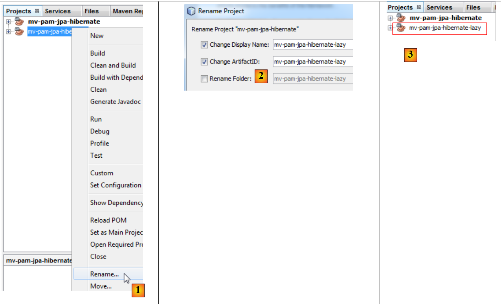 |
- in [1], we hernoemen het project,
- in [2], we hernoemen het project en zijn artifactId,
- in [3], het nieuwe project.
We passen het programma [Main.java] als volgt aan:
package main;
import java.util.List;
import javax.persistence.EntityManager;
import javax.persistence.EntityManagerFactory;
import javax.persistence.Persistence;
import jpa.Employe;
public class Main {
// het onderstaande verzoek JPQL levert een medewerker op
// de vreemde sleutel [Employe].indemnite bevindt zich in FetchType.LAZY
public static void main(String[] args) {
// het volstaat om de Entity Manager aan te maken om de laag JPA op te bouwen
EntityManagerFactory emf = Persistence.createEntityManagerFactory("pam-jpa-hibernatePU");
// eerste poging
EntityManager em = emf.createEntityManager();
Employe employe = (Employe) em.createQuery("select e from Employe e where e.nom=:nom").setParameter("nom", "Jouveinal").getSingleResult();
em.close();
// de werknemer wordt weergegeven
try {
System.out.println(employe);
} catch (Exception ex) {
System.out.println(ex);
}
// tweede poging
em = emf.createEntityManager();
employe = (Employe) em.createQuery("select e from Employe e left join fetch e.indemnite where e.nom=:nom").setParameter("nom", "Jouveinal").getSingleResult();
// de bronnen vrijgeven
em.close();
// de medewerker wordt weergegeven
try {
System.out.println(employe);
} catch (Exception ex) {
System.out.println(ex);
}
// bronnen vrijgeven
emf.close();
}
}
- regel 15: we maken EntityManagerFactory aan op basis van de laag JPA,
- regel 17: we verkrijgen het programma EntityManager waarmee we kunnen communiceren met de laag JPA,
- regel 18: we vragen de medewerker met de naam Jouveinal op,
- regel 19: we sluiten de EntityManager. Dit heeft tot gevolg dat de persistentiecontext wordt gesloten.
- regel 22: de ontvangen medewerker wordt weergegeven.
De klasse [Employe] ziet er als volgt uit:
package jpa;
...
@Entity
@Table(name="EMPLOYES")
public class Employe implements Serializable {
@Id
@GeneratedValue(strategy = GenerationType.AUTO)
private Long id;
@Version
@Column(name="VERSION",nullable=false)
private int version;
@Column(name="SS", nullable=false, unique=true, length=15)
private String SS;
@Column(name="NOM", nullable=false, length=30)
private String nom;
@Column(name="PRENOM", nullable=false, length=20)
private String prenom;
@Column(name="ADRESSE", nullable=false, length=50)
private String adresse;
@Column(name="VILLE", nullable=false, length=30)
private String ville;
@Column(name="CP", nullable=false, length=5)
private String codePostal;
@ManyToOne(fetch= FetchType.LAZY)
@JoinColumn(name="INDEMNITE_ID",nullable=false)
private Indemnite indemnite;
/**
* Returns a string representation of the object. This implementation constructs
* that representation based on the id fields.
* @return a string representation of the object.
*/
@Override
public String toString() {
return "jpa.Employe[id=" + getId()
+ ",version="+getVersion()
+",SS="+getSS()
+ ",nom="+getNom()
+ ",prenom="+getPrenom()
+ ",adresse="+getAdresse()
+",ville="+getVille()
+",code postal="+getCodePostal()
+",indice="+getIndemnite().getIndice()
+"]";
}
...
}
- regel 27: het veld indemnite wordt teruggezet naar de modus LAZY,
- regel 47: gebruikt het veld indemnite. Als de methode toString wordt aangeroepen terwijl het veld indemnite nog niet is teruggezet, gebeurt dit op dat moment. Tenzij de persistentiecontext is gesloten, zoals in het voorbeeld.
Laten we teruggaan naar de code van [Main]:
- regels 21-25: hier zou een uitzondering moeten optreden. De methode toString wordt namelijk aangeroepen. Deze methode maakt gebruik van het veld indemnite. Er wordt naar dit veld gezocht. Aangezien de persistentiecontext is gesloten, bestaat de teruggehaalde entiteit [Employe] niet meer, vandaar de uitzondering.
- regel 27: er wordt een nieuwe EntityManager aangemaakt,
- regel 28: de werknemer Jouveinal wordt opgevraagd, waarbij in de query JPQL expliciet wordt gevraagd naar de bijbehorende vergoeding. Deze expliciete aanvraag is nodig omdat de zoekmodus voor deze vergoeding LAZY is,
- regel 30: we sluiten de EntityManager af,
- regels 32-36: de werknemer wordt opnieuw weergegeven. Er zouden geen uitzonderingen moeten zijn.
Om het project uit te voeren, is een gevulde database nodig. Deze wordt aangemaakt volgens de procedure in paragraaf 5.5. Daarnaast moet het bestand [persistence.xml] worden aangepast:
<?xml version="1.0" encoding="UTF-8"?>
<persistence version="2.0" xmlns="http://java.sun.com/xml/ns/persistence" xmlns:xsi="http://www.w3.org/2001/XMLSchema-instance" xsi:schemaLocation="http://java.sun.com/xml/ns/persistence http://java.sun.com/xml/ns/persistence/persistence_2_0.xsd">
<persistence-unit name="mv-pam-jpa-hibernatePU" transaction-type="RESOURCE_LOCAL">
<provider>org.hibernate.ejb.HibernatePersistence</provider>
<class>jpa.Cotisation</class>
<class>jpa.Employe</class>
<class>jpa.Indemnite</class>
<properties>
<property name="javax.persistence.jdbc.url" value="jdbc:mysql://localhost:3306/dbpam_hibernate"/>
<property name="javax.persistence.jdbc.password" value=""/>
<property name="javax.persistence.jdbc.driver" value="com.mysql.jdbc.Driver"/>
<property name="javax.persistence.jdbc.user" value="root"/>
<property name="hibernate.cache.provider_class" value="org.hibernate.cache.NoCacheProvider"/>
</properties>
</persistence-unit>
</persistence>
- we hebben de optie verwijderd die de tabellen aanmaakte. De database bestaat hier al en is gevuld,
- en we hebben de opties verwijderd waardoor Hibernate de SQL-opdrachten logde die het naar de database verstuurde.
Bij het uitvoeren van het project verschijnen de volgende twee uitvoerresultaten in de console:
- regel 1: de uitzondering die optrad toen de ontbrekende vergoeding moest worden opgezocht terwijl de sessie was afgesloten. We zien dat de vergoeding niet was opgehaald vanwege de modus LAZY,
- regel 2: de werknemer met zijn vergoeding, verkregen via een query die de modus LAZY omzeilde.
5.6.5. Te doen
Maak, volgens een vergelijkbare werkwijze als zojuist beschreven, een project [mv-pam-pa-eclipselink-lazy] aan dat het gedrag van EclipseLink ten opzichte van de modus LAZY laat zien.
Dit levert de volgende resultaten op:
In de modus LAZY hebben beide query’s de vergoeding aan de werknemer toegewezen. Wanneer men op internet informatie zoekt over deze afwijking, ontdekt men dat de aantekening [FetchType.LAZY] (regel 1):
@ManyToOne(fetch= FetchType.LAZY)
@JoinColumn(name="INDEMNITE_ID",nullable=false)
private Indemnite indemnite;
geen opdracht is, maar een voorstel. De implementatie JPA is niet verplicht hieraan gevolg te geven. We zien dus dat de code soms afhankelijk wordt van de gebruikte implementatie JPA. Het is mogelijk om via de configuratie aan EclipseLink het verwachte gedrag voor de modus LAZY mee te geven.
5.6.6. Voor het vervolg
De architectuur van de te bouwen applicatie is als volgt:
 |
Voor het vervolg van dit document zullen we het Maven-project [mv-pam-jpa-hibernate] dupliceren in het project [mv-pam-spring-hibernate] [1, 2, 3]:
 |
- Vervolgens hernoemen we het nieuwe project naar [4, 5, 6].
We passen de afhankelijkheden van het nieuwe project aan. Het bestand [pom.xml] ziet er dan als volgt uit:
<project xmlns="http://maven.apache.org/POM/4.0.0" xmlns:xsi="http://www.w3.org/2001/XMLSchema-instance"
xsi:schemaLocation="http://maven.apache.org/POM/4.0.0 http://maven.apache.org/xsd/maven-4.0.0.xsd">
<modelVersion>4.0.0</modelVersion>
<groupId>istia.st</groupId>
<artifactId>mv-pam-spring-hibernate</artifactId>
<version>1.0-SNAPSHOT</version>
<packaging>jar</packaging>
<name>mv-pam-spring-hibernate</name>
<url>http://maven.apache.org</url>
<repositories>
<repository>
<url>http://repo1.maven.org/maven2/</url>
<id>swing-layout</id>
<layout>default</layout>
<name>Repository for library Library[swing-layout]</name>
</repository>
</repositories>
<properties>
<project.build.sourceEncoding>UTF-8</project.build.sourceEncoding>
</properties>
<dependencies>
<dependency>
<groupId>junit</groupId>
<artifactId>junit</artifactId>
<version>4.10</version>
<scope>test</scope>
<type>jar</type>
</dependency>
<dependency>
<groupId>commons-dbcp</groupId>
<artifactId>commons-dbcp</artifactId>
<version>1.2.2</version>
</dependency>
<dependency>
<groupId>commons-pool</groupId>
<artifactId>commons-pool</artifactId>
<version>1.6</version>
</dependency>
<dependency>
<groupId>org.springframework</groupId>
<artifactId>spring-tx</artifactId>
<version>3.1.1.RELEASE</version>
<type>jar</type>
</dependency>
<dependency>
<groupId>org.springframework</groupId>
<artifactId>spring-beans</artifactId>
<version>3.1.1.RELEASE</version>
<type>jar</type>
</dependency>
<dependency>
<groupId>org.springframework</groupId>
<artifactId>spring-context</artifactId>
<version>3.1.1.RELEASE</version>
<type>jar</type>
</dependency>
<dependency>
<groupId>org.springframework</groupId>
<artifactId>spring-orm</artifactId>
<version>3.1.1.RELEASE</version>
<type>jar</type>
</dependency>
<dependency>
<groupId>org.hibernate</groupId>
<artifactId>hibernate-entitymanager</artifactId>
<version>4.1.2</version>
<type>jar</type>
</dependency>
<dependency>
<groupId>mysql</groupId>
<artifactId>mysql-connector-java</artifactId>
<version>5.1.6</version>
</dependency>
<dependency>
<groupId>org.swinglabs</groupId>
<artifactId>swing-layout</artifactId>
<version>1.0.3</version>
</dependency>
</dependencies>
</project>
- regels 25-31: de afhankelijkheid voor de tests JUnit,
- regels 32-41: de afhankelijkheden voor de Apache-verbindingspool DBCP,
- regels 42-65: de afhankelijkheden voor het Spring-framework,
- regels 67-71: de afhankelijkheden voor de implementatie JPA / Hibernate,
- regels 72-76: de afhankelijkheid voor de driver JDBC van MySQL,
- regels 77-81: de afhankelijkheid voor de Swing-interface. Deze wordt automatisch door NetBeans toegevoegd wanneer een Swing-interface aan het project wordt toegevoegd.
Daarnaast worden de twee MySQL-databases gegenereerd:
- [dbpam_hibernate] op basis van het script [dbpam_hibernate.sql],
- [dbpam_eclipselink] op basis van het script [dbpam_eclipselink.sql],
5.7. De -interfaces van de lagen [metier] en [DAO]
Laten we terugkeren naar de architectuur van de applicatie:
 |
Welke interface moet de laag [DAO] in de bovenstaande architectuur aanbieden aan de laag [metier] en welke interface moet de laag [metier] aanbieden aan de laag [ui]? Een eerste benadering om de interfaces van de verschillende lagen te definiëren, is het onderzoeken van de verschillende use cases van de applicatie. Hier hebben we er twee, afhankelijk van de gekozen gebruikersinterface: console of grafisch formulier.
Laten we eens kijken naar de manier waarop de console-applicatie wordt gebruikt:
De applicatie ontvangt drie gegevens van de gebruiker (zie regel 1 hierboven)
- het socialezekerheidsnummer van de kinderoppas
- het aantal gewerkte uren in de maand
- het aantal gewerkte dagen in de maand
Op basis van deze gegevens en andere gegevens die in configuratiebestanden zijn opgeslagen, geeft de applicatie de volgende informatie weer:
- regels 4-6: de ingevoerde waarden
- regels 8-10: de gegevens van de werknemer wiens socialezekerheidsnummer is opgegeven
- regels 12-14: de tarieven van de verschillende sociale premies
- regels 16-17: de verschillende vergoedingen die aan de kinderoppas zijn uitbetaald
- regels 19-24: de gegevens van de loonstrook van de kinderopvangmoeder
Een aantal gegevens moet door de laag [metier] aan de laag [ui] worden verstrekt:
- de gegevens met betrekking tot een kinderoppas, geïdentificeerd aan de hand van haar socialezekerheidsnummer. Deze gegevens zijn te vinden in de tabel [EMPLOYES]. Hierdoor kunnen de regels 6-8 worden weergegeven.
- de bedragen van de verschillende sociale premietarieven die op het brutoloon moeten worden ingehouden. Deze gegevens zijn te vinden in de tabel [COTISATIONS]. Hiermee kunnen de regels 10-12 worden weergegeven.
- de bedragen van de diverse vergoedingen die verband houden met de functie van kinderopvangmoeder. Deze informatie is te vinden in de tabel [INDEMNITES]. Hierdoor kunnen de regels 14-15 worden weergegeven.
- de samenstellende delen van het salaris, weergegeven in de regels 18-22.
Op basis hiervan zou men kunnen besluiten tot een eerste boeking vanuit de interface [IMetier], die door de laag [metier] wordt aangeboden aan de laag [ui]:
- regel 1: de elementen van de laag [metier] worden in het pakket [metier] geplaatst
- regel 5: de methode [ calculerFeuilleSalaire ] neemt als parameters de drie gegevens die door de laag [ui] zijn verkregen en retourneert een object van het type [FeuilleSalaire] dat de gegevens bevat die de laag [ui] op de console zal weergeven. De klasse [FeuilleSalaire] zou er als volgt uit kunnen zien:
- regel 9: de werknemer waarop de loonstrook betrekking heeft – informatie nr. 1 weergegeven door de laag [ui]
- regel 10: de verschillende premietarieven – informatie nr. 2 weergegeven door de laag [ui]
- regel 11: de verschillende toelagen die verband houden met de index van de werknemer – informatie nr. 3 weergegeven door de laag [ui]
- regel 12: de samenstellende delen van zijn salaris – informatie nr. 4 weergegeven door de laag [ui]
Een tweede toepassingsgeval van de laag [métier] doet zich voor bij de grafische interface:
 |
Hierboven is te zien dat de vervolgkeuzelijst [1, 2] alle werknemers weergeeft. Deze lijst moet worden opgevraagd bij de laag [métier]. De interface ace van deze laag verandert dan als volgt:
- regel [10]: de methode waarmee de laag [ui] de lijst met alle medewerkers kan opvragen bij de laag [métier].
De laag [metier] kan de velden [Employe, Cotisation, Indemnite] van het bovenstaande object [FeuilleSalaire] alleen initialiseren door de laag [DAO] te raadplegen, aangezien deze informatie in de tabellen van de database staat. Hetzelfde geldt voor het ophalen van de lijst met alle medewerkers. Men zou één enkele interface [DAO] kunnen maken die de toegang tot de drie entiteiten [Employe, Cotisation, Indemnite] beheert. We kiezen er hier echter voor om per entiteit een interface [DAO] aan te maken.
De interface [DAO] voor toegang tot de entiteiten [Cotisation] van de tabel [COTISATIONS] ziet er als volgt uit:
- regel 6: de interface [ICotisationDao] regelt de toegang tot de entiteit [Cotisation] en dus tot de tabel [COTISATIONS] in de database. Onze applicatie heeft alleen de methode [findAll] uit regel 16 nodig, waarmee de volledige inhoud van de tabel [COTISATIONS] kan worden opgehaald. We wilden hier uitgaan van een algemener geval waarin alle bewerkingen CRUD (Create, Read, Update, Delete) op de entiteit worden uitgevoerd.
- regel 8: de methode [create] maakt een nieuwe entiteit [Cotisation] aan
- regel 10: de methode [edit] wijzigt een bestaande entiteit [Cotisation]
- regel 12: de methode [destroy] verwijdert een bestaande entiteit [Cotisation]
- regel 14: met de methode [find] kan een bestaande entiteit [Cotisation] worden opgezocht aan de hand van de id
- regel 16: de methode [findAll] geeft een lijst weer van alle bestaande entiteiten [Cotisation]
Laten we even stilstaan bij de signatuur van de methode [create]:
De methode create heeft een parameter cotisation van het type Cotisation. De parameter cotisation moet worden opgeslagen, c.a.d. hier opgeslagen in de tabel [COTISATIONS]. Vóór deze opslag heeft de parameter cotisation een identificatiecode id zonder waarde. Na de opslag heeft het veld id een waarde die de primaire sleutel is van het record dat is toegevoegd aan de tabel [COTISATIONS]. De parameter cotisation is dus een invoer-/uitvoerparameter van de methode create. Het lijkt niet nodig dat de methode create bovendien de parameter cotisation als resultaat retourneert. Aangezien de aanroepende methode een verwijzing naar het object [Cotisation cotisation] heeft, heeft zij, indien dit object wordt gewijzigd, toegang tot het gewijzigde object omdat zij ernaar verwijst. De aanroepende methode kan dus de waarde achterhalen die de methode create heeft toegekend aan het veld id van het object [Cotisation cotisation]. De signatuur van de methode zou dus eenvoudiger kunnen zijn:
Bij het schrijven van een interface is het goed om in gedachten te houden dat deze in twee verschillende contexten kan worden gebruikt: local en distant. In de context local worden de aanroepende methode en de aangeroepen methode uitgevoerd in dezelfde JVM:
 |
Als de laag [metier] de methode create van de laag [DAO] aanroept, heeft deze wel degelijk een verwijzing naar de parameter [Cotisation cotisation] die zij aan de methode doorgeeft.
In de context distant worden de aanroepende methode en de aangeroepen methode in verschillende JVM-contexten uitgevoerd:
 |
Hierboven wordt de laag [metier] uitgevoerd in JVM 1 en de laag [DAO] in JVM 2 op twee verschillende machines. De twee lagen communiceren niet rechtstreeks met elkaar. Tussen beide ligt een laag die we de communicatielaag [1] zullen noemen. Deze bestaat uit een zendlaag [2] en een ontvangstlaag [3]. De ontwikkelaar hoeft deze communicatielagen doorgaans niet zelf te schrijven. Ze worden automatisch gegenereerd door softwaretools. De laag [metier] wordt geschreven alsof deze in dezelfde JVM wordt uitgevoerd als de laag [DAO]. Er is dus geen wijziging in de code nodig.
Het communicatiemechanisme tussen de laag [metier] en de laag [DAO] is als volgt:
- de laag [metier] roept de methode create van de laag [DAO] aan en geeft daarbij de parameter [Cotisation cotisation1] door
- deze parameter wordt in feite doorgegeven aan de verzendlaag [2]. Deze zal de waarde van de parameter cotisation1 via het netwerk verzenden, en niet de referentie ervan. De exacte vorm van deze waarde hangt af van het gebruikte communicatieprotocol.
- De ontvangstlaag [3] haalt deze waarde op en reconstrueert op basis daarvan een object [Cotisation cotisation2] dat een afspiegeling is van de oorspronkelijke parameter die door de laag [metier] is verzonden. We hebben nu twee identieke objecten (wat de inhoud betreft) in twee verschillende JVM: cotisation1 en cotisation2.
- De ontvangstlaag geeft het object cotisation2 door aan de methode create van de laag [DAO], die het in de database zal opslaan. Na deze bewerking is het veld id van het object cotisation2 geïnitialiseerd met de primaire sleutel van het record dat aan de tabel [COTISATIONS] is toegevoegd. Dit is niet het geval voor het object cotisation1, waarnaar de laag [metier] verwijst. Als we willen dat de laag [metier] een verwijzing naar het object cotisation2 heeft, moeten we dit naar de laag sturen. Daarom moeten we de handtekening van de methode create van de laag [DAO] wijzigen:
- Met deze nieuwe handtekening zal de methode create het opgeslagen object cotisation2 als resultaat opleveren. Dit resultaat wordt teruggestuurd naar de ontvangstlaag [3], die de laag [DAO] had aangeroepen. Deze laag geeft de waarde (en niet de referentie) van cotisation2 terug aan de verzendlaag [2].
- De verzendlaag [2] haalt deze waarde op en reconstrueert op basis daarvan een object [Cotisation cotisation3], dat een afspiegeling is van het resultaat dat is geretourneerd door de methode create van de laag [DAO].
- Het object [Cotisation cotisation3] wordt teruggegeven aan de methode van de laag [metier], waarvan de aanroep van de methode create van de laag [DAO] dit hele mechanisme in gang had gezet. De laag [metier] kan dus de waarde van de primaire sleutel kennen die is toegekend aan het object [Cotisation cotisation1], waarvan zij de persistentie had aangevraagd: dit is de waarde van het veld id van cotisation3.
De hierboven beschreven architectuur is niet de meest gangbare. Vaker komen de lagen [metier] en [DAO] voor in dezelfde JVM:
 |
In deze architectuur zijn het de methoden van de laag [metier] die resultaten moeten retourneren, en niet die van de laag [DAO]. Niettemin is de volgende handtekening van de methode create van de laag [DAO]:
stelt ons in staat om geen aannames te doen over de daadwerkelijk geïmplementeerde architectuur. Het gebruik van handtekeningen die werken ongeacht de gekozen architectuur, lokaal of op afstand, houdt in dat wanneer een aangeroepen methode bepaalde parameters wijzigt:
- moeten deze ook deel uitmaken van het resultaat van de aangeroepen methode
- de aanroepende methode het resultaat van de aangeroepen methode moet gebruiken en niet de verwijzingen naar de gewijzigde parameters die zij aan de aangeroepen methode heeft doorgegeven.
Zo behouden we de mogelijkheid om zonder codewijzigingen over te stappen van een locale-architectuur naar een distante-architectuur. Laten we in dit licht de interface [ICotisationDao] nog eens bekijken:
- regel 8: het geval van de methode create is behandeld
- regel 10: de methode edit gebruikt haar parameter [Cotisation cotisation1] om het record in de tabel [COTISATIONS] bij te werken dat dezelfde primaire sleutel heeft als het object cotisation. Als resultaat levert de methode het object cotisation2 op, dat een afspiegeling is van het gewijzigde record. De parameter cotisation1 wordt daarentegen niet gewijzigd. De methode moet cotisation2 als resultaat opleveren, ongeacht of men zich in de context van een distante- of locale-architectuur bevindt.
- regel 12: de methode destroy verwijdert het record uit de tabel [COTISATIONS] met dezelfde primaire sleutel als het als parameter doorgegeven object cotisation. Dit object wordt niet gewijzigd. Het hoeft dus niet te worden geretourneerd.
- regel 14: de parameter id van de methode find wordt door de methode niet gewijzigd. Deze hoeft geen deel uit te maken van het resultaat.
- regel 16: de methode findAll heeft geen parameters. Deze hoeft dus niet te worden onderzocht.
Uiteindelijk hoeft alleen de signatuur van de methode create te worden aangepast om bruikbaar te zijn binnen een distante-architectuur. De bovenstaande redeneringen gelden ook voor de andere interfaces [DAO]. We zullen deze niet herhalen en direct handtekeningen gebruiken die zowel binnen een distante-architectuur als binnen een locale-architectuur bruikbaar zijn.
De interface [DAO] voor toegang tot de entiteiten [Indemnite] uit de tabel [INDEMNITES] ziet er als volgt uit:
- Op regel 6 regelt de interface [IIndemniteDao] de toegang tot de entiteit [Indemnite] en dus tot de tabel [INDEMNITES] in de database. Onze applicatie heeft alleen de methode [findAll] uit regel 16 nodig, waarmee de volledige inhoud van de tabel [INDEMNITES] kan worden opgehaald. We wilden hier uitgaan van een algemener geval waarin alle bewerkingen CRUD (Create, Read, Update, Delete) op de entiteit worden uitgevoerd.
- regel 8: de methode [create] maakt een nieuwe entiteit [Indemnite] aan
- regel 10: de methode [edit] wijzigt een bestaande entiteit [Indemnite]
- regel 12: de methode [destroy] verwijdert een bestaande entiteit [Indemnite]
- regel 14: met de methode [find] kan een bestaande entiteit [Indemnite] worden opgezocht via haar identificatiecode id
- regel 16: de methode [findAll] retourneert een lijst met alle bestaande entiteiten [Indemnite]
De interface [DAO] voor toegang tot de entiteiten [Employe] uit de tabel [EMPLOYES] ziet er als volgt uit:
- regel 6: de interface [IEmployeDao] regelt de toegang tot de entiteit [Employe] en dus tot de tabel [EMPLOYES] in de database. Onze applicatie heeft alleen de methode [findAll] uit regel 16 nodig, waarmee de volledige inhoud van de tabel [EMPLOYES] kan worden opgehaald. We wilden hier uitgaan van een algemener geval waarin alle bewerkingen CRUD (Create, Read, Update, Delete) op de entiteit worden uitgevoerd.
- regel 8: de methode [create] maakt een nieuwe entiteit [Employe] aan
- regel 10: de methode [edit] wijzigt een bestaande entiteit [Employe]
- regel 12: de methode [destroy] verwijdert een bestaande entiteit [Employe]
- regel 14: met de methode [find] kan een bestaande entiteit [Employe] worden opgezocht aan de hand van de identificatiecode id
- regel 16: met de methode [find(String SS)] kan een bestaande entiteit [Employe] worden opgezocht aan de hand van het nummer SS. We hebben gezien dat deze methode nodig was voor de console-applicatie.
- regel 18: de methode [findAll] retourneert een lijst met alle bestaande entiteiten [Employe]. We hebben gezien dat deze methode nodig was voor de grafische applicatie.
5.8. De klasse [PamException]
De laag [DAO] gaat samenwerken met de Java-klassen API en JDBC. Deze API genereert gecontroleerde uitzonderingen van het type [SQLException], die twee nadelen hebben:
- ze maken de code zwaarder, omdat deze uitzonderingen verplicht met try/catch moeten worden afgehandeld.
- ze moeten in de methodesignatuur van de interface [IDao] worden gedeclareerd met een "throws SQLException". Dit heeft tot gevolg dat de implementatie van deze interface wordt verhinderd door klassen die een gecontroleerde uitzondering van een ander type dan [SQLException] zouden genereren.
Om dit probleem op te lossen, zal de laag [DAO] alleen ongecontroleerde uitzonderingen van het type [PamException] „doorgeven”.
 |
- de laag [JDBC] genereert uitzonderingen van het type [SQLException]
- de laag [JPA] genereert uitzonderingen die specifiek zijn voor de gebruikte implementatie JPA
- de laag [DAO] genereert ongecontroleerde uitzonderingen van het type [PamException]
Dit heeft twee gevolgen:
- de laag [metier] hoeft de uitzonderingen van de laag [DAO] niet af te vangen met try/catch-blokken. Ze kan deze gewoon doorgeven naar de laag [ui].
- de methoden van de interface [IDao] hoeven in hun handtekening niet de aard van de uitzondering [PamException] te vermelden, wat de mogelijkheid biedt om deze interface te implementeren met klassen die een ander type ongecontroleerde uitzondering zouden genereren.
De klasse [PamException] wordt in het pakket [exception] van het NetBeans-project geplaatst:
 |
De code ervan is als volgt:
- regel 4: [PamException] is afgeleid van [RuntimeException]. Het betreft dus een type uitzonderingen dat de compiler ons niet verplicht om af te vangen met een try/catch of op te nemen in de methodesignatuur. Om deze reden staat [PamException] niet in de methodesignatuur van de interface [IDao]. Hierdoor kan deze interface worden geïmplementeerd door een klasse die een ander type uitzonderingen genereert, mits deze ook afstamt van [RuntimeException].
- Om de fouten die kunnen optreden van elkaar te onderscheiden, wordt de foutcode uit regel 7 gebruikt. De drie constructors in de regels 14, 19 en 24 zijn die van de bovenliggende klasse [RuntimeException], waaraan een parameter is toegevoegd: de foutcode die aan de uitzondering moet worden toegekend.
De werking van de applicatie, vanuit het oogpunt van uitzonderingen, zal als volgt zijn:
- de laag [DAO] zal elke opgetreden uitzondering inkapselen in een uitzondering van het type [PamException] en deze laatste doorgeven aan de laag [métier].
- De laag [métier] laat de uitzonderingen die door de laag [DAO] worden gegenereerd, doorgaan. Deze laag zal elke uitzondering die zich voordoet in de laag [métier], inkapselen in een uitzondering van het type [PamException] en deze laatste doorgeven aan de laag [ui].
- De laag [ui] onderschept alle uitzonderingen die vanuit de lagen [métier] en [DAO] worden doorgegeven. Deze laag zal de uitzondering alleen weergeven op de console of de grafische interface.
Laten we nu achtereenvolgens de implementatie van de lagen [DAO] en [metier] bekijken.
5.9. De laag [DAO] van de applicatie [PAM]
We bevinden ons in de context van de volgende architectuur:
 |
5.9.1. Implementatie
Aanbevolen lectuur: paragraaf 3.1.3 van [ref1]
Vraag: Schrijf, met behulp van de Spring-integratie / JPA, de klassen [CotisationDao, IndemniteDao, EmployeDao] voor de implementatie van de interfaces [ICotisationDao, IIndemniteDao, IEmployeDao]. Elke methode van de klasse moet een eventuele uitzondering opvangen en deze inkapselen in een uitzondering van het type [PamException] met een foutcode die specifiek is voor de opgevangen uitzondering.
De implementatieklassen zullen deel uitmaken van het pakket [dao]:
 |
5.9.2. Configuratie
Aanbevolen lectuur: paragraaf 3.1.5 van [ref1]
De integratie DAO / JPA wordt geconfigureerd via het Spring-bestand [spring-config-dao.xml] en de bestanden JPA en [persistence.xml]:
 |
Vraag: schrijf de inhoud van deze twee bestanden op. We gaan ervan uit dat de gebruikte database de database MySQL5 [dbpam_hibernate] is, die is gegenereerd door het script SQL [dbpam_hibernate.sql]. Het Spring-bestand definieert de volgende drie beans: employeDao van het type EmployeDao, indemniteDao van het type IndemniteDao, cotisationDao van het type CotisationDao. Bovendien zal de gebruikte implementatie JPA Hibernate zijn.
5.9.3. Tests
Aanbevolen lectuur: paragrafen 3.1.6 en 3.1.7 van [ref1]
Nu de laag [DAO] is geschreven en geconfigureerd, kunnen we deze testen. De testarchitectuur ziet er als volgt uit:
 |
5.9.4. InitDB
We gaan twee testprogramma’s maken voor de laag [DAO]. Deze worden geplaatst in het pakket [dao] [2] van de branch [Test Packages] [1] van het NetBeans-project. Deze branch is niet opgenomen in het project dat wordt gegenereerd door de optie [Build project], waardoor we er zeker van zijn dat de testprogramma’s die we daarin plaatsen niet worden opgenomen in het uiteindelijke .jar-bestand van het project.
 |
De klassen die in de tak [Test Packages] zijn geplaatst, hebben toegang tot de klassen in de tak [Source Packages] en tot de klassenbibliotheken van het project. Als de tests andere bibliotheken nodig hebben dan die van het project, moeten deze worden gedeclareerd in de takken [Test Libraries] en [2].
De testklassen maken gebruik van de unit-testtool JUnit:
- [JUnitInitDB] voert geen tests uit. Deze vult de database met enkele records en geeft deze vervolgens weer op de console.
- [JUnitDao] voert een reeks tests uit en controleert de resultaten daarvan.
Het raamwerk van de klasse [JUnitInitDB] is als volgt:
- De methode [init] wordt uitgevoerd voordat de reeks tests begint (annotatie @BeforeClass). Deze methode instantiëert de laag [DAO].
- De methode [clean] wordt vóór elke test uitgevoerd (annotatie @Before). Deze methode leegt de database.
- De methode [initDB] is een test (annotatie @Test). Dit is de enige. Een test moet Assert.assertCondition-assertie-instructies bevatten. Hier zullen er geen zijn. De methode is dus een schijn-test. Deze heeft als doel de database met enkele rijen te vullen en vervolgens de inhoud van de database op de console weer te geven. Hiervoor worden de methoden create en findAll van de lagen [DAO] gebruikt.
Vraag: vul de code van de klasse [JUnitInitDB] aan. Gebruik daarbij het voorbeeld uit paragraaf 3.1.6 van [ref1]. De code genereert de inhoud die in paragraaf 5.1 wordt weergegeven.
5.9.5. Implementatie e van de tests
We zijn nu klaar om [InitDB] uit te voeren. We beschrijven de procedure aan de hand van SGBD en MySQL5:
 |
- de klassen [1], de configuratiebestanden [2] en de testklassen van de laag [DAO] [3] zijn ingesteld,
 |
- het project wordt gebouwd [4]
- de klasse [JUnitInitDB] wordt uitgevoerd [5]. De SGBD MySQL5 wordt gestart met een bestaande database [dbpam_hibernate],
- het venster [Test Results] [6] geeft aan dat de tests zijn geslaagd. Dit bericht is hier niet relevant, omdat het programma [JUnitInitDB] geen Assert.assertCondition-assertie-instructies bevat die de test zouden kunnen doen mislukken. Het toont echter wel aan dat er geen uitzondering is opgetreden tijdens de uitvoering van de test.
Het venster [Output] bevat de logbestanden van de uitvoering, die van Spring en die van de test zelf. De uitvoer van de klasse [JUnitInitDB] is als volgt:
De tabellen [EMPLOYES, INDEMNITES, COTISATIONS] zijn gevuld. Dit kan worden gecontroleerd via een NetBeans-verbinding met de database [dbpam_hibernate].
 |
- in [1], op het tabblad [services], worden de gegevens van de tabel [employes] van de verbinding [dbpam_hibernate] [2] weergegeven,
- in [3] het resultaat.
5.9.6. JUnitDao
We richten ons nu op een tweede categorie tests, [JUnitDao]:
 |
Het raamwerk van de klasse ziet er als volgt uit:
1 2 3 4 5 6 7 8 9 10 11 12 13 14 15 16 17 18 19 20 21 22 23 24 25 26 27 28 29 30 31 32 33 34 35 36 37 38 39 40 41 42 43 44 45 46 47 48 49 50 51 52 53 54 55 56 57 58 59 60 61 62 63 64 65 66 67 68 69 70 71 72 73 74 75 76 77 78 79 80 81 82 83 84 85 86 87 88 89 90 91 92 93 94 95 96 97 98 99 100 101 102 103 104 105 106 107 108 109 110 111 112 113 114 115 116 117 118 119 120 121 122 123 124 125 126 127 128 129 130 131 132 133 134 135 136 137 138 139 140 141 142 143 144 145 146 147 148 149 150 151 152 153 154 155 156 157 158 159 160 161 162 163 164 165 166 167 168 169 170 171 172 173 174 175 176 177 178 179 180 181 182 183 184 185 186 187 | |
In de vorige testklasse wordt de database vóór elke test geleegd.
Vraag: schrijf de volgende methoden:
1 - test02: deze is gebaseerd op test01
2 - test03: een medewerker heeft een veld van het type Indemnite. Er moeten dus een entiteit Indemnite en een entiteit Employe worden aangemaakt
3 - test04.
Als we op dezelfde manier te werk gaan als bij de testklasse [JUnitInitDB], krijgen we de volgende resultaten:
 |
- in [1] voeren we de testklasse
- in [2], de testresultaten in het venster [Test Results]
Laten we een fout veroorzaken om te zien hoe dit op de resultatenpagina wordt weergegeven:
Regel 13: de assertie veroorzaakt een fout, aangezien de waarde van Csgrds 3,49 is (regel 8). De uitvoering van de testklasse levert de volgende resultaten op:
 |
- De resultatenpagina [1] laat nu zien dat er tests zijn mislukt.
- In [2] staat een samenvatting van de uitzondering waardoor de test is mislukt. Hierin staat het regelnummer van de Java-code waar de uitzondering is opgetreden.
5.10. De laag [metier] van de applicatie [PAM]
Nu de laag [DAO] is geschreven, gaan we verder met de analyse van de bedrijfslaag [2]:
 |
5.10.1. De Java-interface [IMetier]
Deze is beschreven in paragraaf 5.7. We herhalen deze hieronder:
De implementatie van de laag [metier] vindt plaats in een pakket [metier]:
 |
Het pakket [metier] zal, naast de interface [IMetier] en de bijbehorende implementatie [Metier], twee andere klassen: [FeuilleSalaire] en [ElementsSalaire]. De klasse [FeuilleSalaire] is kort besproken in paragraaf 5.7. We komen hier nu op terug.
5.10.2. De klasse [FeuilleSalaire]
De methode [calculerFeuilleSalaire] van de interface [IMetier] retourneert een object van het type [FeuilleSalaire] dat de verschillende elementen van een loonstrook weergeeft. De definitie ervan is als volgt:
- regel 7: de klasse implementeert de interface Serializable omdat de instanties ervan via het netwerk kunnen worden uitgewisseld.
- regel 9: de werknemer waarop de loonstrook betrekking heeft
- regel 10: de verschillende premietarieven
- regel 11: de verschillende toeslagen die verband houden met de index van de werknemer
- regel 12: de samenstellende delen van zijn salaris
- regels 14-22: de twee constructors van de klasse
- regels 25-27: methode [toString] ter identificatie van een specifiek object [FeuilleSalaire]
- regels 29 en verder: de openbare toegangspunten tot de privévelden van de klasse
De klasse [ElementsSalaire], waarnaar in regel 11 van de bovenstaande klasse [FeuilleSalaire] wordt verwezen, bevat de elementen waaruit een loonstrook bestaat. De definitie ervan is als volgt:
- regel 3: de klasse implementeert de interface Serializable omdat deze een onderdeel is van de klasse FeuilleSalaire, die serialiseerbaar moet zijn.
- regel 6: het basisloon
- regel 7: de sociale premies die over dit basisloon worden betaald
- regel 8: de dagvergoedingen voor de verzorging van het kind
- regel 9: de dagelijkse vergoedingen voor maaltijden van het kind
- regel 10: het aan de kinderopvangmoeder te betalen nettoloon
- regels 12-24: de constructoren van de klasse
- regels 27-31: methode [toString] ter identificatie van een specifiek object [ElementsSalaire]
- regels 34 en verder: de openbare accessors voor de privévelden van de klasse
5.10.3. De implementatieklasse [Metier] van de laag [metier]
De implementatieklasse [Metier] van de laag [metier] zou er als volgt uit kunnen zien:
- regel 5: de Spring-annotatie @Transactional zorgt ervoor dat elke methode van de klasse binnen een transactie wordt uitgevoerd.
- regels 9-10: de verwijzingen naar de lagen [DAO] van de entiteiten [Cotisation, Employe, Indemnite]
- regels 14-17: de methode [calculerFeuilleSalaire]
- regels 20-22: de methode [findAllEmployes]
- regel 24 en verder: de openbare accessors van de privévelden van de klasse
Vraag: schrijf de code voor de methode [findAllEmployes].
Vraag: schrijf de code van de methode [calculerFeuilleSalaire].
Let op de volgende punten:
- de wijze waarop het salaris wordt berekend, is uitgelegd in paragraaf 5.2.
- als de parameter [SS] aan geen enkele werknemer overeenkomt (de laag [DAO] heeft een pointer null geretourneerd), zal de methode een uitzondering van het type [PamException] genereren met een passende foutcode.
5.10.4. Testen van de laag [metier]
We maken twee testprogramma’s:
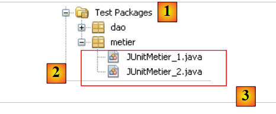 |
De testklassen [3] worden aangemaakt in het pakket [metier] [2] van de tak [Test Packages] [1] van het project.
De klasse [JUnitMetier_1] zou er als volgt uit kunnen zien:
Er is geen bewering Assert.assertCondition in de klasse. We willen alleen enkele salarissen berekenen om ze vervolgens handmatig te controleren. De schermweergave die wordt verkregen door de vorige klasse uit te voeren, is als volgt:
- regel 4: de loonstrook van Justine Laverti
- regel 5: de loonstrook van Marie Jouveinal
- regel 6: de uitzondering die ontstaat doordat de werknemer met nr. SS 'xx' niet bestaat.
Vraag: regel 17 van [JUnitMetier_1] maakt gebruik van de Spring-bean met de naam metier. Geef de definitie van deze bean in het bestand [spring-config-metier-dao.xml].
De klasse [JUnitMetier_2] zou er als volgt uit kunnen zien:
De klasse [JUnitMetier_2] is een kopie van de klasse [JUnitMetier_1], waarbij deze keer asserties zijn geplaatst in de methode test01.
Opdracht: schrijf de methode test01.
Bij het uitvoeren van de klasse [JUnitMetier_2] krijg je, als alles goed gaat, de volgende resultaten:
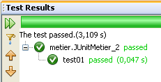
5.11. De laag [ui] van de applicatie [PAM] – versie console
Nu de laag [metier] is geschreven, moeten we nog de lagen [ui] en [1] schrijven:
 |
We zullen twee verschillende implementaties van de laag [ui] maken: een versie console en een grafische versie swing:
 |
5.11.1. De klasse [ui.console.Main]
We richten ons eerst op de console-applicatie die wordt geïmplementeerd door de hierboven genoemde klasse [ui.console.Main]. De werking ervan is beschreven in paragraaf 5.3. Het raamwerk van de klasse [Main] zou er als volgt uit kunnen zien:
Vraag: vul de bovenstaande code aan.
5.11.2. Uitvoering
Om de klasse [ui.console.Main] uit te voeren, gaat men als volgt te werk:
 |
- in [1], selecteer de projecteigenschappen,
- in [2] de projecteigenschap [Run] selecteren,
- gebruik de knop [3] om de uit te voeren klasse (de zogenaamde hoofdklasse) aan te wijzen,
- selecteer de klasse [4],
- de klasse verschijnt in [5]. Deze heeft drie argumenten nodig om te worden uitgevoerd (nr. SS, aantal gewerkte uren, aantal gewerkte dagen). Deze argumenten worden in [6] geplaatst,
- waarna het project [7] kan worden uitgevoerd. Door de bovenstaande configuratie wordt de klasse [ui.console.Main] uitgevoerd.
De resultaten van de uitvoering worden weergegeven in het venster [output]:
 |  |
5.12. De laag [ui] van de applicatie [PAM] – grafische versie
We implementeren nu de laag [ui] met een grafische interface:
 |
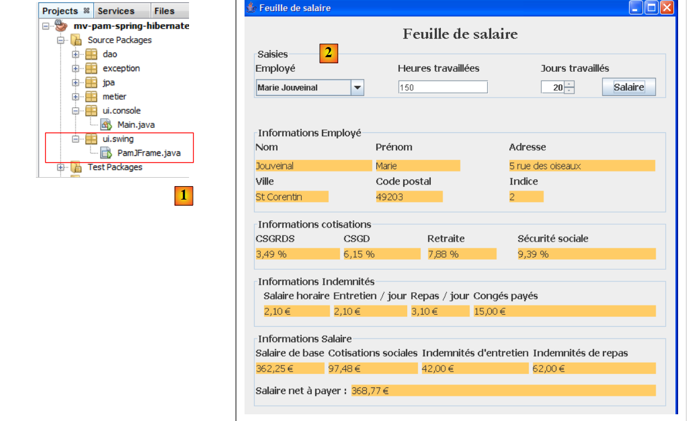 |
- in [1], de klasse [PamJFrame] van de grafische interface
- in [2]: de grafische interface
5.12.1. Een korte handleiding
Om de grafische interface te maken, kun je als volgt te werk gaan:
 |
- [1]: maak een nieuw bestand aan met de knop [1] [New File...]
- [2]: kies de categorie van het bestand [Swing GUI Forms], c.a.d. grafische formulieren
- [3]: kies het type [JFrame Form], een leeg formuliertype
 |
- [5]: geef het formulier een naam die tevens als klasse zal dienen
- [6]: het formulier wordt in een pakket geplaatst
- [8]: het formulier wordt toegevoegd aan de projectstructuur
- [9]: het formulier is toegankelijk vanuit twee perspectieven: [Design] en [9], waarmee de verschillende componenten van het formulier kunnen worden ontworpen, en [Source] en [10 ci-dessous], die toegang geven tot de Java-code van het formulier. Uiteindelijk is een formulier gewoon een Java-klasse zoals elke andere. Het perspectief [Design] is een hulpmiddel om het formulier te ontwerpen. Telkens wanneer er in de modus [Design] een component wordt toegevoegd, wordt er Java-code toegevoegd in het perspectief [Source] om hiermee rekening te houden.
 |
- [11]: de lijst met beschikbare Swing-componenten voor een formulier is te vinden in het venster [Palette].
- [12]: het venster [Inspector] toont de boomstructuur van de formuliercomponenten. De componenten met een visuele weergave bevinden zich in de tak [JFrame], de overige in de tak [Other Components].
 |
- in [13] selecteren we een component [JLabel] met een enkele klik
- in [14] plaatsen we deze in de modus [Design] op het formulier
- in [15] stellen we de eigenschappen van JLabel in (tekst, lettertype).
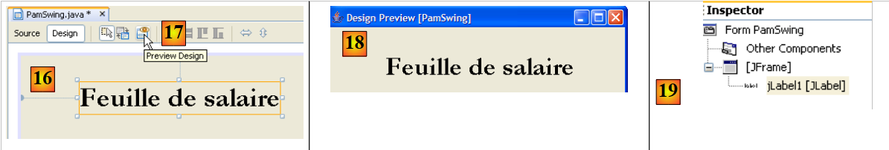 |
- in [16], het verkregen resultaat.
- in [17] vragen we een voorbeeldweergave van het formulier aan
- in [18], het resultaat
- in [19] is het label [JLabel1] toegevoegd aan de componentenstructuur in venster [Inspector]
 |
- in [20] en [21]: in het perspectief [Source] van het formulier is Java-code toegevoegd om het toegevoegde JLabel te beheren.
Een tutorial over het bouwen van formulieren met NetBeans is beschikbaar via de url [http://www.netbeans.org/kb/trails/matisse.html].
5.12.2. De grafische interface [PamJFrame]
We gaan de volgende grafische interface bouwen:
 |
- in [1], de grafische interface
- in [2], de boomstructuur van de componenten: één JLabel en zes JPanel-containers
JLabel1
 | 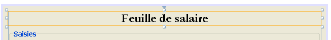 |
JPanel1
 | 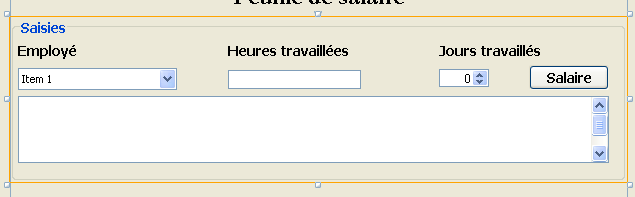 |
JPanel2
 |  |
JPanel3
 |  |
JPanel4
 |  |
JPanel5
 |  |
Praktische opdracht: bouw de bovenstaande grafische interface met behulp van de tutorial [http://www.netbeans.org/kb/trails/matisse.html].
5.12.3. De gebeurtenissen van de grafische interface
Aanbevolen lectuur: hoofdstuk [Interfaces graphiques] uit [ref2].
We gaan de klik op de knop [jButtonSalaire] afhandelen. Om de methode voor de afhandeling van deze gebeurtenis te maken, kunnen we als volgt te werk gaan:
 |
De handler voor de klik op de knop [JButtonSalaire] wordt gegenereerd:
De Java-code die de vorige methode koppelt aan de klik op de knop [JButtonSalaire] wordt eveneens gegenereerd:
Regels 2-5 geven aan dat de klik (event van het type ActionPerformed) op de knop [jButtonSalaire] (regel 2) moet worden afgehandeld door de methode [jButtonSalaireActionPerformed] (regel 4).
We zullen ook de gebeurtenis [caretUpdate] (verplaatsing van de invoercursor) op het invoerveld [jTextFieldHT] afhandelen. Om de handler voor deze gebeurtenis aan te maken, gaan we te werk zoals eerder:
 |
De handler voor de gebeurtenis [caretUpdate] op het invoerveld [jTextFieldHT] wordt gegenereerd:
De Java-code die de vorige methode koppelt aan de gebeurtenis [caretUpdate] in het invoerveld [jTextFieldHT] wordt eveneens gegenereerd:
De regels 1-4 geven aan dat de gebeurtenis [caretUpdate] (regel 2) op de knop [jTextFieldHT] (regel 1) moet worden afgehandeld door de methode [ jTextFieldHTCaretUpdate] (regel 3).
5.12.4. Initialisatie van de grafische interface
Laten we terugkeren naar de architectuur van onze applicatie:
 |
De laag [ui] heeft een verwijzing nodig naar de laag [metier]. Laten we nog eens bekijken hoe deze verwijzing in de applicatie console werd verkregen:
De methode is hetzelfde in de grafische toepassing. Bij het opstarten van deze toepassing moet de verwijzing [IMetier metier] uit regel 3 hierboven ook worden geïnitialiseerd. De gegenereerde code voor de grafische interface is voorlopig als volgt:
- regels 29-35: de statische methode [main] die de applicatie start
- regel 32: er wordt een instantie van de grafische interface [PamJFrame] aangemaakt en zichtbaar gemaakt.
- regels 7-9: de constructor van de grafische interface.
- regel 8: aanroep van de methode [initComponents] die op regel 17 is gedefinieerd. Deze methode wordt automatisch gegenereerd op basis van het werk dat in de modus [Design] is uitgevoerd. Hier mag niet aan worden gewijzigd.
- regel 21: de methode die de verplaatsing van de invoercursor in het veld [jTextFieldHT] regelt
- regel 25: de methode die de klik op de knop [jButtonSalaire] afhandelt
Om onze eigen initialisaties aan de bovenstaande code toe te voegen, kunnen we als volgt te werk gaan:
- regel 4: we roepen een eigen methode aan om onze eigen initialisaties uit te voeren. Deze worden gedefinieerd in de code op de regels 10-42
Vraag: vul, aan de hand van de commentaren, de code van de procedure [doMyInit] aan.
5.12.5. Gebeurtenishandlers
Vraag: schrijf de methode [jTextFieldHTCaretUpdate]. Deze methode moet ervoor zorgen dat, als de gegevens in het veld [jTextFieldHT] geen reëel getal >=0 zijn, de knop [jButtonSalaire] uitgeschakeld is.
Vraag: schrijf de methode [jButtonSalaireActionPerformed] die de loonstrook moet weergeven van de werknemer die is geselecteerd in [jComboBoxEmployes].
5.12.6. Uitvoering van de grafische interface
Om de grafische interface uit te voeren, passen we de configuratie [Run] van het project aan:
 |
- in [1], voeg de klasse van de grafische interface toe
Het project moet compleet zijn met de configuratiebestanden (persistence.xml, spring-config-metier-dao.xml) en de klasse van de grafische interface. Start het doel SGBD voordat je het project uitvoert.
5.13. Implementatie van de laag JPA met EclipseLink
We kijken naar de volgende architectuur, waarin de laag JPA nu wordt geïmplementeerd door EclipseLink:
 |
5.13.1. Het NetBeans-project
Het nieuwe NetBeans-project wordt verkregen door het vorige project te kopiëren:
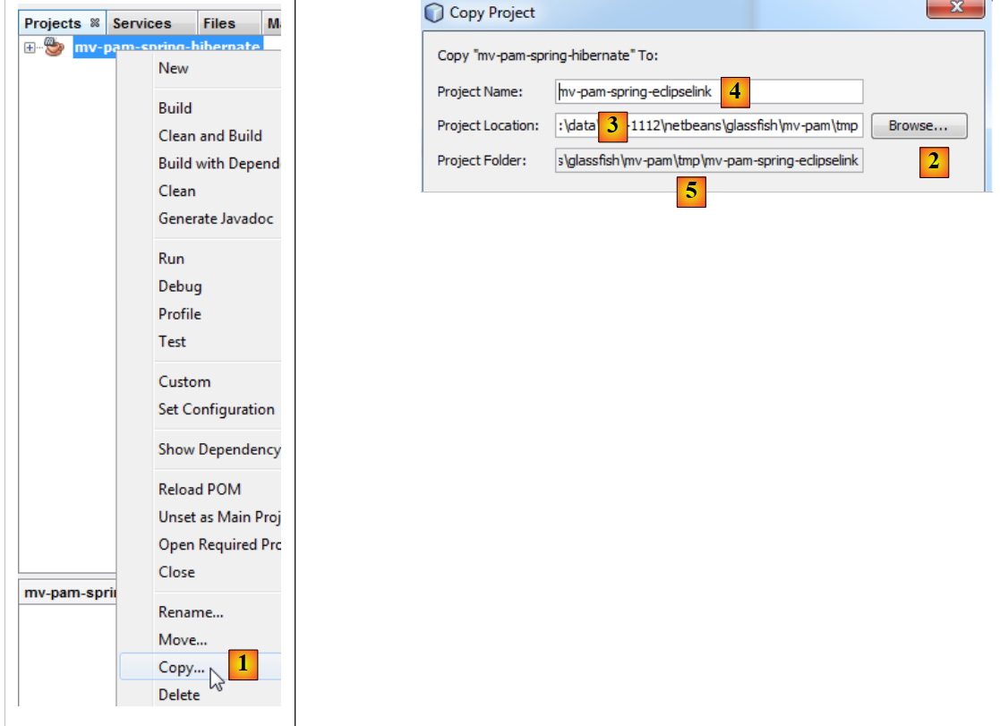 |
- in [1]: klik met de rechtermuisknop op het Hibernate-project en kies Copy
- met behulp van de knop [2] de bovenliggende map van het nieuwe project. De naam van de map verschijnt in [3].
- in [4]: geef het nieuwe project een naam
- in [5], de naam van de projectmap
 |
- in [1] is het nieuwe project aangemaakt. Het heeft dezelfde naam als het origineel,
- in [2] en [3], we hernoemen het naar [mv-pam-spring-eclipselink].
Het project moet op twee punten worden aangepast aan de nieuwe laag JPA / EclipseLink:
- in [4] moeten de Spring-configuratiebestanden worden aangepast. Daarin staat namelijk de configuratie van de laag JPA.
- in [5] moeten de bibliotheken van het project worden aangepast: die van Hibernate moeten worden vervangen door die van EclipseLink.
Laten we met dit laatste punt beginnen. Het bestand [pom.xml] voor het nieuwe project ziet er als volgt uit:
<project xmlns="http://maven.apache.org/POM/4.0.0" xmlns:xsi="http://www.w3.org/2001/XMLSchema-instance"
xsi:schemaLocation="http://maven.apache.org/POM/4.0.0 http://maven.apache.org/xsd/maven-4.0.0.xsd">
<modelVersion>4.0.0</modelVersion>
<groupId>istia.st</groupId>
<artifactId>mv-pam-spring-eclipselink</artifactId>
<version>1.0-SNAPSHOT</version>
<packaging>jar</packaging>
<name>mv-pam-spring-eclipselink</name>
<url>http://maven.apache.org</url>
<repositories>
<repository>
<url>http://repo1.maven.org/maven2/</url>
<id>swing-layout</id>
<layout>default</layout>
<name>Repository for library Library[swing-layout]</name>
</repository>
<repository>
<url>http://download.eclipse.org/rt/eclipselink/maven.repo/</url>
<id>eclipselink</id>
<layout>default</layout>
<name>Repository for library Library[eclipselink]</name>
</repository>
</repositories>
<properties>
<project.build.sourceEncoding>UTF-8</project.build.sourceEncoding>
</properties>
<dependencies>
<dependency>
<groupId>junit</groupId>
<artifactId>junit</artifactId>
<version>4.10</version>
<scope>test</scope>
<type>jar</type>
</dependency>
<dependency>
<groupId>commons-dbcp</groupId>
<artifactId>commons-dbcp</artifactId>
<version>1.2.2</version>
</dependency>
<dependency>
<groupId>commons-pool</groupId>
<artifactId>commons-pool</artifactId>
<version>1.6</version>
</dependency>
<dependency>
<groupId>org.springframework</groupId>
<artifactId>spring-tx</artifactId>
<version>3.1.1.RELEASE</version>
<type>jar</type>
</dependency>
<dependency>
<groupId>org.springframework</groupId>
<artifactId>spring-beans</artifactId>
<version>3.1.1.RELEASE</version>
<type>jar</type>
</dependency>
<dependency>
<groupId>org.springframework</groupId>
<artifactId>spring-context</artifactId>
<version>3.1.1.RELEASE</version>
<type>jar</type>
</dependency>
<dependency>
<groupId>org.springframework</groupId>
<artifactId>spring-orm</artifactId>
<version>3.1.1.RELEASE</version>
<type>jar</type>
</dependency>
<dependency>
<groupId>org.eclipse.persistence</groupId>
<artifactId>eclipselink</artifactId>
<version>2.3.0</version>
</dependency>
<dependency>
<groupId>org.eclipse.persistence</groupId>
<artifactId>javax.persistence</artifactId>
<version>2.0.3</version>
</dependency>
<dependency>
<groupId>mysql</groupId>
<artifactId>mysql-connector-java</artifactId>
<version>5.1.6</version>
</dependency>
<dependency>
<groupId>org.swinglabs</groupId>
<artifactId>swing-layout</artifactId>
<version>1.0.3</version>
</dependency>
</dependencies>
</project>
- regels 73-82: de afhankelijkheden voor de implementatie JPA EclipseLink,
- regels 19-24: de Maven-repository voor EclipseLink.
De Spring-configuratiebestanden moeten worden aangepast om aan te geven dat de implementatie JPA is gewijzigd. In beide bestanden verandert alleen het gedeelte dat de laag JPA configureert. In [spring-config-metier-dao.xml] staat bijvoorbeeld:
De regels 19-36 configureren de laag JPA. De gebruikte implementatie JPA is Hibernate (regel 22). Daarnaast is de doeldatabase [dbpam_hibernate] (regel 41).
Om over te schakelen naar een implementatie JPA / EclipseLink, worden de bovenstaande regels 19-35 vervangen door de onderstaande regels:
- regel 5: de gebruikte implementatie JPA is EclipseLink
- regel 9: de eigenschap databasePlatform stelt de doel-SGBD vast, in dit geval MySQL
- regel 11: om de databasetabellen te genereren wanneer de laag JPA wordt geïnstantieerd. Hier is de eigenschap uitgecommentarieerd.
- regel 7: om de door de laag JPA verzonden opdrachten SQL op de console weer te geven. Hier is de eigenschap uitgecommentarieerd.
Bovendien wordt de doeldatabase [dbpam_eclipselink] (regel 4 hieronder):
5.13.2. Uitvoering van de tests
Voordat de volledige applicatie wordt getest, is het raadzaam om te controleren of de tests JUnit slagen met de nieuwe implementatie JPA. Voordat we dit doen, verwijderen we eerst de tabellen uit de database. Hiervoor maken we, indien nodig, in het tabblad [Runtime] van NetBeans een verbinding met de database dbpam_eclipselink / MySQL5. Zodra je verbinding hebt met de database dbpam_eclipselink / MySQL5, kun je de tabellen verwijderen zoals hieronder weergegeven:
- [1]: vóór het verwijderen
- [2]: na het verwijderen
 |
Zodra dit is gebeurd, kan de eerste test worden uitgevoerd op de laag [DAO]: InitDB, die de database vult. Om ervoor te zorgen dat de eerder verwijderde tabellen door de applicatie opnieuw worden aangemaakt, moet je ervoor zorgen dat in de Spring-configuratie JPA / EclipseLink de regel:
aanwezig is en niet is uitgecommentarieerd.
We bouwen het project (Build) en voeren vervolgens de test [JUnitInitDB] uit:
 |
- in [1] wordt de test InitDB uitgevoerd.
- Bij [2] mislukt de test. De uitzondering wordt gegenereerd door Spring en niet door een test die zou zijn mislukt.
Veroorzaakt door: org.springframework.beans.factory.BeanCreationException: Fout bij het aanmaken van een bean met de naam 'entityManagerFactory', gedefinieerd in de classpath-bron [spring-config-DAO.xml]: Het aanroepen van de init-methode is mislukt; de geneste uitzondering is java.lang.IllegalStateException: U moet de Java-agent starten om InstrumentationLoadTimeWeaver te kunnen gebruiken. Zie de Spring-documentatie.
Spring geeft aan dat er een configuratieprobleem is. De melding is onduidelijk. De reden voor de uitzondering is uitgelegd in paragraaf 3.1.9 van [ref1]. Om de Spring-/EclipseLink-configuratie te laten werken, moet JVM, dat de applicatie uitvoert, worden gestart met een specifieke parameter: een Java-agent. Deze parameter heeft de volgende vorm:
[spring-agent.jar] is de Java-agent die JVM nodig heeft om de Spring-configuratie / EclipseLink te beheren.
Bij het uitvoeren van een project is het mogelijk om argumenten door te geven aan de JVM:
 |
- in [1] krijgt men toegang tot de projecteigenschappen
- met [2] worden de eigenschappen van Run weergegeven
- in [3], geef je de parameter -javaagent door aan JVM
5.13.3. InitDB
Nu zijn we klaar om [InitDB] opnieuw te testen. Deze keer zijn de verkregen resultaten als volgt:
 |
- in [1] is de test geslaagd
- in [2], in het tabblad [Services] vernieuwen we de verbinding die NetBeans heeft met de database [dbpam_eclipselink]
- in [3] zijn vier tabellen aangemaakt
 |
- in [5] wordt de inhoud van de tabel [employes] weergegeven
- in [6], het resultaat.
5.13.4. JUnitDao
De uitvoering van de testklasse [JUnitDao] kan mislukken, ook al was deze met de implementatie JPA / Hibernate wel geslaagd. Laten we een voorbeeld analyseren om te begrijpen waarom.
De geteste methode is de volgende methode IndemniteDao.create:
- regels 15-22: de geteste methode
De testmethode is als volgt:
package dao;
...
public class JUnitDao {
// lagen DAO
static private IEmployeDao employeDao;
static private IIndemniteDao indemniteDao;
static private ICotisationDao cotisationDao;
@BeforeClass
public static void init() {
// logboek
log("init");
// applicatieconfiguratie
ApplicationContext ctx = new ClassPathXmlApplicationContext("spring-config-DAO.xml");
// lagen DAO
employeDao = (IEmployeDao) ctx.getBean("employeDao");
indemniteDao = (IIndemniteDao) ctx.getBean("indemniteDao");
cotisationDao = (ICotisationDao) ctx.getBean("cotisationDao");
}
@Before()
public void clean() {
// database leegmaken
for (Employe employe : employeDao.findAll()) {
employeDao.destroy(employe);
}
for (Cotisation cotisation : cotisationDao.findAll()) {
cotisationDao.destroy(cotisation);
}
for (Indemnite indemnite : indemniteDao.findAll()) {
indemniteDao.destroy(indemnite);
}
}
// logs
private static void log(String message) {
System.out.println("----------- " + message);
}
// tests
….
@Test
public void test05() {
log("test05");
// er worden twee vergoedingen aangemaakt met dezelfde index
// schendt de uniekheidsvoorwaarde voor de index
boolean erreur = true;
Indemnite indemnite1 = null;
Indemnite indemnite2 = null;
Throwable th = null;
try {
indemnite1 = indemniteDao.create(new Indemnite(1, 1.93, 2, 3, 12));
indemnite2 = indemniteDao.create(new Indemnite(1, 1.93, 2, 3, 12));
erreur = false;
} catch (PamException ex) {
th = ex;
// controles
Assert.assertEquals(31, ex.getCode());
} catch (Throwable th1) {
th = th1;
}
// controles
Assert.assertTrue(erreur);
// reeks uitzonderingen
System.out.println("Chaîne des exceptions --------------------------------------");
System.out.println(th.getClass().getName());
while (th.getCause() != null) {
th = th.getCause();
System.out.println(th.getClass().getName());
}
// de eerste vergoeding moest worden opgeslagen
Indemnite indemnite = indemniteDao.find(indemnite1.getId());
// controle
Assert.assertNotNull(indemnite);
Assert.assertEquals(1, indemnite.getIndice());
Assert.assertEquals(1.93, indemnite.getBaseHeure(), 1e-6);
Assert.assertEquals(2, indemnite.getEntretienJour(), 1e-6);
Assert.assertEquals(3, indemnite.getRepasJour(), 1e-6);
Assert.assertEquals(12, indemnite.getIndemnitesCP(), 1e-6);
// de tweede vergoeding hoefde niet te worden opgeslagen
List<Indemnite> indemnites = indemniteDao.findAll();
int nbIndemnites = indemnites.size();
Assert.assertEquals(nbIndemnites, 1);
}
...
}
Vraag: leg uit wat de test test05 doet en geef de verwachte resultaten aan.
De resultaten die zijn verkregen met een JPA / Hibernate-laag zijn als volgt:
De test is geslaagd, c.a.d. De beweringen zijn geverifieerd en er wordt geen uitzondering vanuit de testmethode gegenereerd.
Vraag: leg uit wat er is gebeurd.
De resultaten die zijn verkregen met een JPA / EclipseLink-laag zijn als volgt:
Net als eerder met Hibernate slaagt de test, c.a.d. De beweringen zijn geverifieerd en er is geen uitzondering die de testmethode verlaat.
Vraag: leg uit wat er is gebeurd.
Vraag: wat kunnen we uit deze twee voorbeelden concluderen over de uitwisselbaarheid van de implementaties JPA? Is deze hier volledig?
5.13.5. De overige tests
Zodra de laag [DAO] is getest en als correct is beoordeeld, kunnen we overgaan tot het testen van de laag [metier] en die van het project zelf in de console- of grafische versie. De wijziging in de implementatie JPA heeft geen enkele invloed op de lagen [metier] en [ui] en dus, als deze lagen met Hibernate werkten, zullen ze ook met EclipseLink werken, op enkele uitzonderingen na: het vorige voorbeeld laat namelijk zien dat de uitzonderingen die door de lagen [DAO] worden gegenereerd, kunnen verschillen. Zo genereert bij het uitvoeren van de test de combinatie Spring / JPA / Hibernate een uitzondering van het type [PamException], een uitzondering die specifiek is voor de applicatie [pam], terwijl de combinatie Spring / JPA / EclipseLink daarentegen een uitzondering van het type [TransactionSystemException] genereert, een uitzondering van het Spring-framework. Als in het testscenario de laag [ui] een uitzondering van het type [PamException] verwacht omdat deze met Hibernate is gebouwd, zal deze niet meer werken wanneer wordt overgeschakeld naar EclipseLink.
5.13.6. Te doen
Praktische opdracht: herhaal de tests van de applicaties console en swing met verschillende SGBD: MySQL5, Oracle XE, SQL Server.